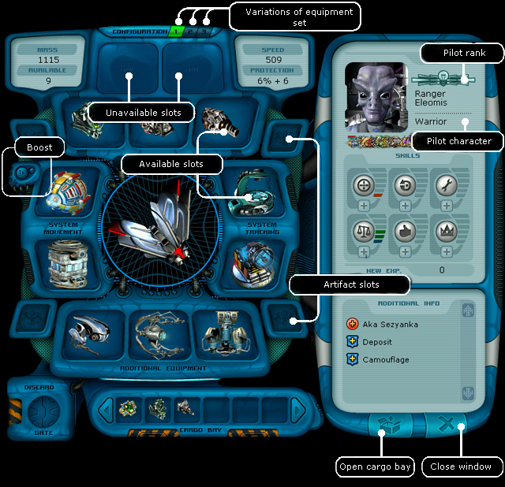
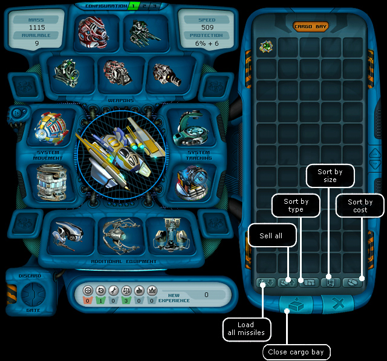

Ranger manual > Navigation
panel > Ship (S)
|
Ranger manual > Navigation
panel > Ship (S)
|
| Ship (S) This window displays your avatar and your ship. Shown above are main parameters of the ship: armor strength, amount of free space, weight and speed. In the middle of the window there is the ship's hull, as well as equipment and weapon, mounted in special slots. Below you can see the items available in the hatch. In the right part of the window there is the pilot's name, his avatar, personal characteristics, pilot rank, awards and development of skills. |

|
Note! All equipment, which is used when changing the configuration, should be available in the hold. You can use the equipment in the hold for making the configuration too, but the player's ship should be located on a planet or a base, where the hold is located. Otherwise the equipment in the hold won't be mounted. You can move the items from the slots into hold and back (Alt+right mouse click). For your convenience you can review the contents of the hold, if you maximize it with a relevant button located in the right bottom corner. Click with the right mouse button some equipment (e.g. the radar) - it will be automatically mounted into the relevant slot in the hull provided it is available.  Being on a planet you can sell, throw away, repair or put into hold the items. Note. Not all slots can be active in the hulls. It depends on ship series. In the middle of a closed slot you can see a caption 'n/a'. With the help of some types of non-standard equipment (artifacts), micromodules you can increase the amount of active slots. Note! To make the equipment work, it should be installed into a relevant slot. Engine - into the engine slot, scanner - scanner slot, frag weapon - weapon slot. The equipment and weapon located in the hold, don't work! To move an item from the hold into a slot: 1. Click an item to select it. The mouse cursor shape will change to a "hand", holding the selected item, the slots, which can accept this item, will be highlighted. 2. Click the highlighted slot you need. BTW there is another, a quicker way to do it - click with the right mouse button an item, if there is a free slot and it is free, the selected item will be automatically mounted!
Quickly moving an item from the storage into the hold: right-click an item with in the storage with Shift pressed. Quickly moving all items from the hold into the storage: keys Ctrl + I. Quickly moving all items from the storage into the hold: keys Ctrl + O. Throwing an item away: 1. click the item with the mouse button to take it. The mouse cursor will take the shape of a hand holding this item. 2. Drag this item into the extendible slot 'Dispose'. 3. Click the slot with the leaves opened to get it of the item. Note. Take into consideration that if you throw away your ship's engine or its fuel tank, the ship won't be able to fly. If you dispose the gripper, no gripping of items will be possible.
When you hover the cursor over an element a pop-up window appears with a short description of this element. For instance you can view the description and characteristics of any item on board of your ship. Or else you could find out, how many experience points you have yet to gain to be promoted to the next pilot rank or increase a certain skill. To find out the amount of points left to the next pilot rank: Hover the cursor over the emblem of your current flight rank in the right part of the screen. Note. You will not be promoted to a new rank automatically, you should visit a military base for that. To find out the amount of points left to the next level-up of a certain skill: Move the cursor to the icon of the relevant skill in the right part of the screen. Description of pilot skills: Accuracy The accuracy skill developed to a 100%-level allows to inflict the maximal damage. For instance if weapon specs read that this weapon can inflict 24-36 damage, with accuracy of 100%, the damage inflicted equals to 36. Maneuverability A pilot with a 100%-level of maneuverability skill will receive the minimal damage in combat. If the maneuverability and the accuracy of the combating sides have the same values, a random damage will be inflicted within the weapon power limit. (For more info on the calculation of damage in dependence on the skills "Maneuverability" and "Accuracy", see the section "Firing weapons".) Technical Skills Technical knowledge developed to the maximum, reduces the speed of equipment wear and gives an opportunity to control up to 7 research probes. Trading Skill of trading developed to the maximum, allows the pilot to sell the equipment at its actual cost. Charisma Pilot's charm developed to the maximum, softens the negative reaction of the others to your actions by two times. At the same time it increases the positive reaction by two times. Additionally, the developed charisma skills increase the sum of awards for the quests completed. The Leadership skill developed to the maximum, allows to have up to 5 other rangers under under your command. At the certain level of the pirate rating it allows to have up to 5 pirates under your command. However, take into account during the talks on hiring a pirate of a higher rank that he won't submit, if you have a lower rank. |